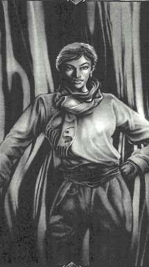

ДараМать Мерлина и супруга Корвина, Дара упрямая и изобретательная, все равно любит Корвина , и, хоть она отказывается это признать, полагают, что она сама ищет его. При Дворах Хаоса существует мнение, что если кто найдет его, так это она. Связанная рациональностью гораздо меньше, чем жители Янтаря, и все-таки понимающая врожденную зависимость Корвина от рассудка, логики, она способна вырваться из круга традиционных мыслей и перекроить все на свой, абсолютно уникальный манер. Учитывая душевное состояние Корвина в конце войны с Брандом и Хаосом, ее уникальный разум может оказаться необходимым, если она намерена отыскать Корвина. Что ей нужно от него еще, остается неясным. |
 |